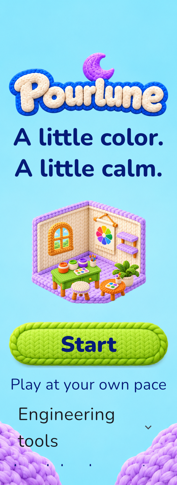
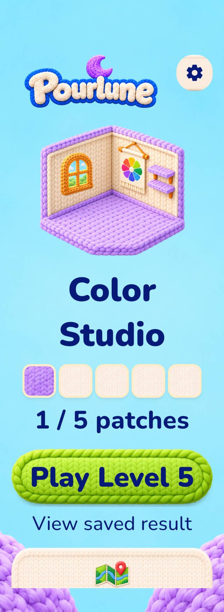
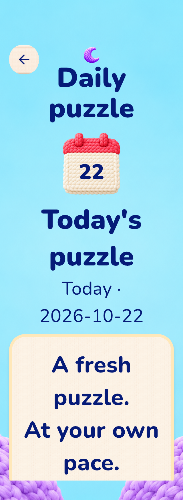
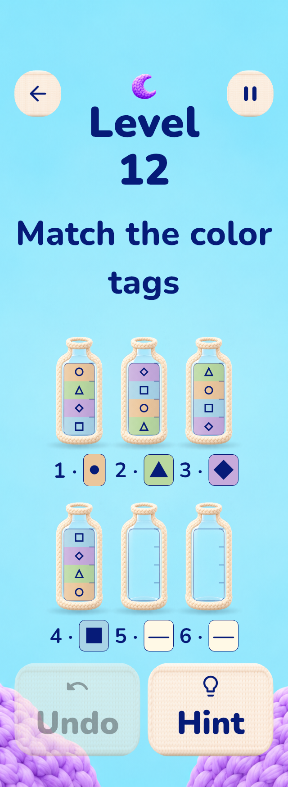
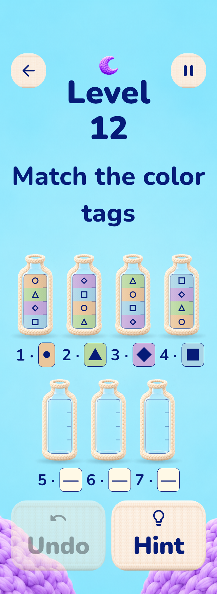
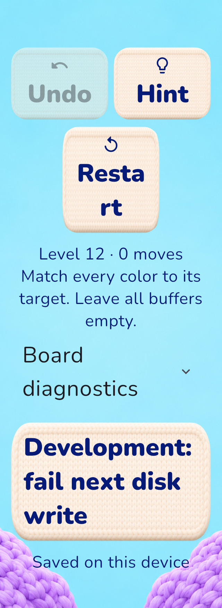
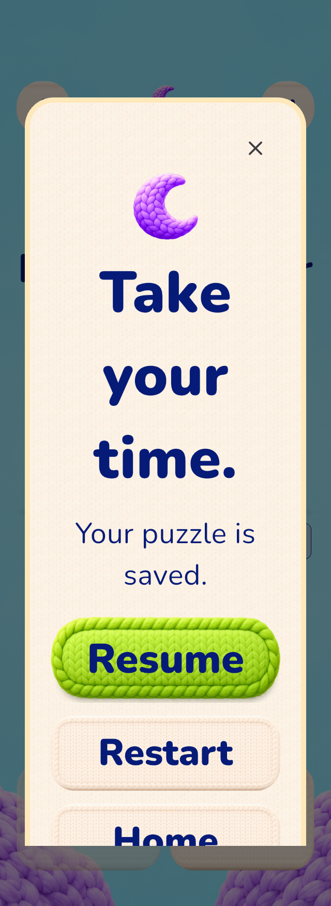

2026-10-22 · iOS 26.5 Simulator · 同为402×874逻辑视口。左侧用CSS显示原稿三栏中的对应页（原PNG未改）；右侧为真实Flutter渲染，804×1748 PNG以2x记录，不含系统状态栏或模拟器外壳。配对用于检查构图、材质、信息层级；参考页概念进度与实际存档的差异明确标注。
逐图真实状态、视口、QA来源 · 检查结果与边界。这是执行交付证据，不是独立验收。所有参考派生美术仍为production candidate / rights UNCONFIRMED。
新隔离库。完整场景仅为欢迎插画，实际pieces仍为空。
实际按钮完成1–4后1/5；原稿2/5为概念示例，不伪造其进度。顺序：场景、拼片、主操作、三入口。
实际main001定义与原概念示例不同；原固定目标规则和教学流程保留。
真实main012定义，显式QA start以到达布局；未声称解锁。底部第三入口仍是已授权免费Restart，额外瓶广告属于B04。
真实Pause：月亮、保存说明、绿色Resume、竖排Restart/Home。
实际main1成功事务与只读终盘；含空缓冲瓶以忠实反映规则。底部卡片可滚动。
3张针织行卡；只展示实际拥有图层。
实际1/5，hero、拼片卡、主操作；未伪造完整场景或产权认可。
日历为无字素材+真实日期22；保留已验收完整月历及历史只读逻辑。
相同真实App与controller的受控320宽视口；原始PNG为640宽。七瓶仅为核心权益+SQL保存的QA几何状态，不代表广告发奖。可上下滚动访问完整文字与操作。






